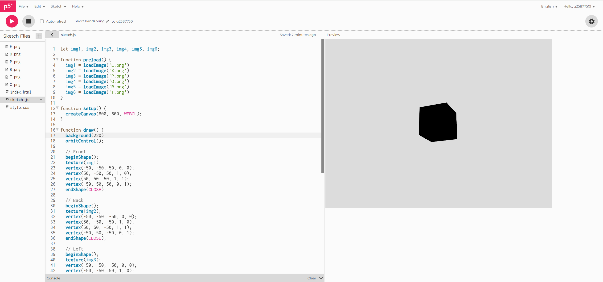
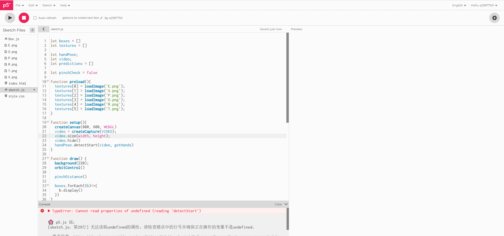
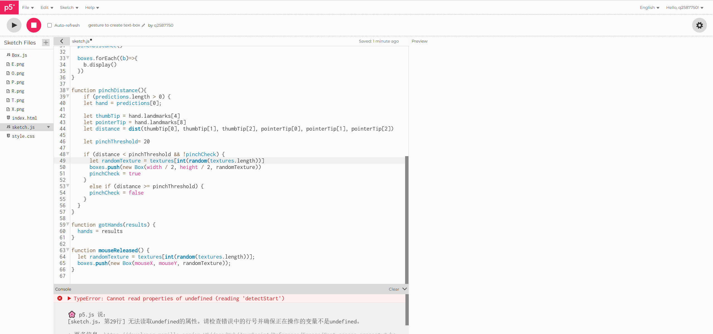
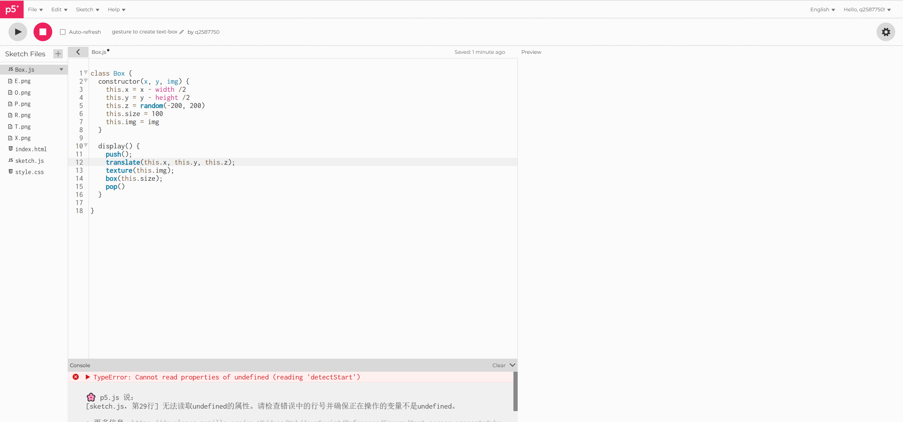
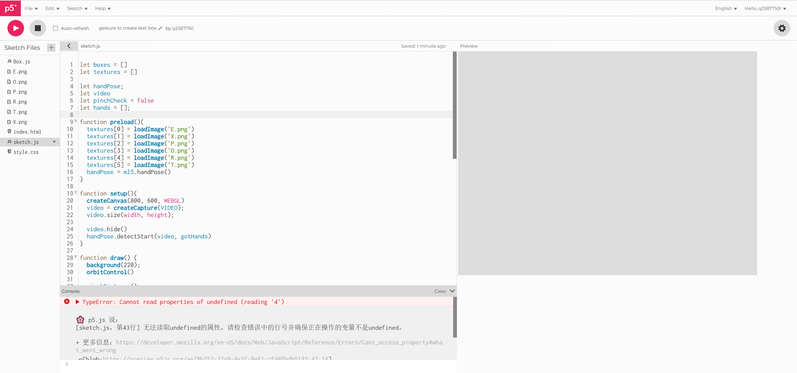
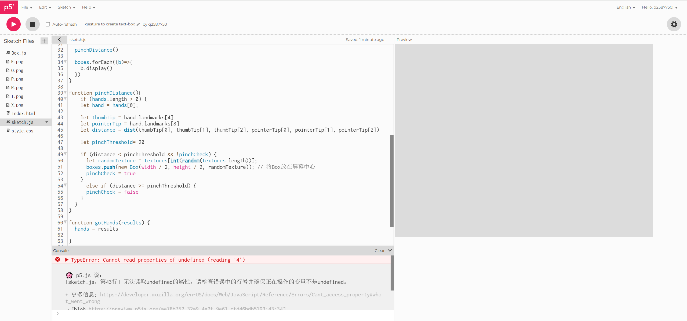
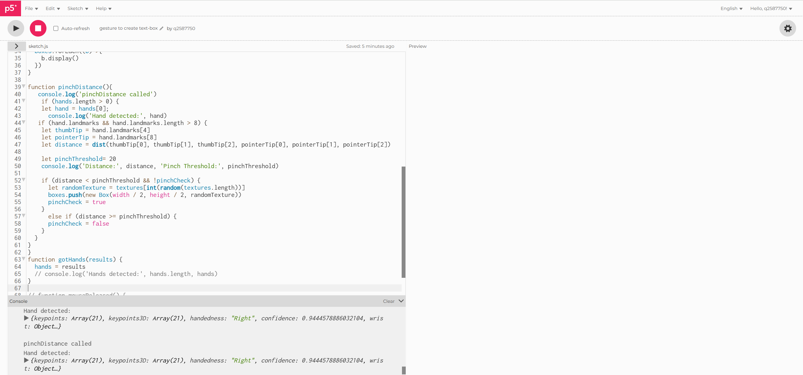
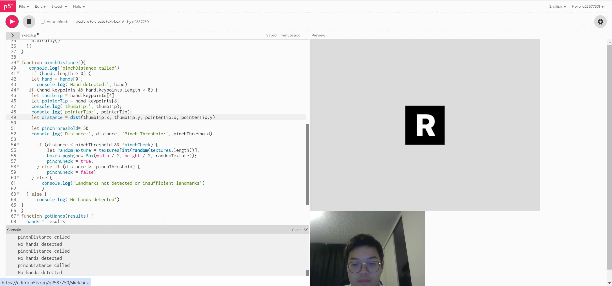
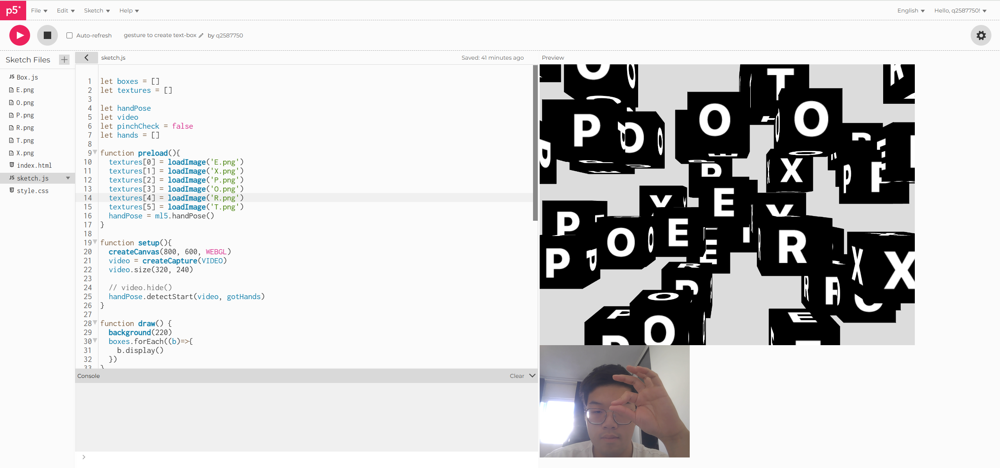
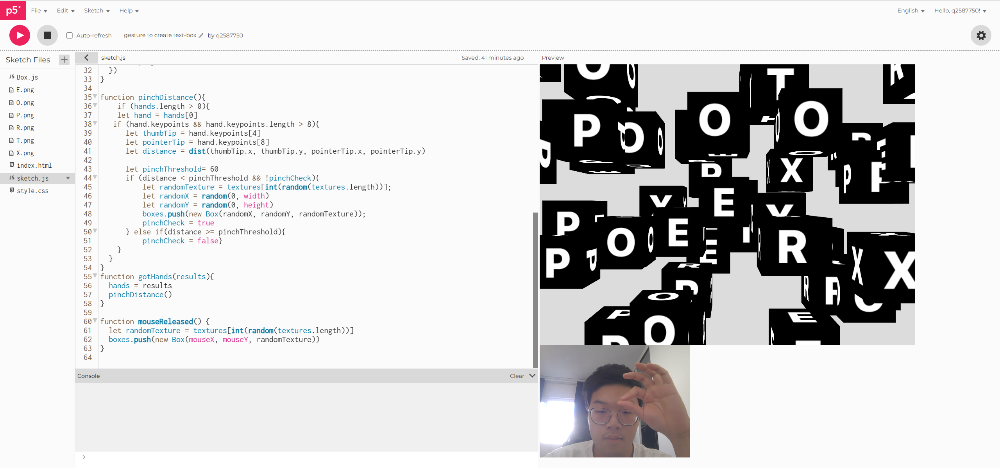

Step1: In the beginning, I want to use vertex() to create a box, so I can add different texture to this box, but there is something wrong and I fail to repair it.
Step2: Therefore, I use box() to replace it, although I can't let one box's texture different, users will not realize this point because of viewing angle.
  Step3: Then, I continue to program and fix some bugs.
 Step4: The next question is that there is no bug report displayed, but the box doesn't appear according to my expectation, so I have to use console.log() to check whether each step run correctly.
Step5: I find question is that as I searched for the tutorial video, I didn't check the time and version of ml5, in which 'landmarks' is not applicable and replaced by 'keypoints'. Otherwise, my code about distance also has some questions, thus the next step is make the box generated in random positions.
Step6: Finally, it works.
 